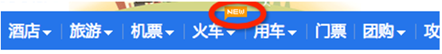

上一章介绍的导航与本章介绍的导航条有明显的区别，导航条的特点有：
制作基础导航条的步骤是：
.navbar-nav.navbar和.navbar-default 导航标题：可以通过 .navbar-header> .navbar-brand的形式为导航条添加标题：
其主要起提醒作用，改良后可以用来放置logo。
二级菜单：与给导航制作二级菜单相同，见第八章
选项状态：各选项（<li>）添加类.active就可获得激活状态，添加类.disabled就可获得禁用状态。（上面所有例子都有此效果。）
导航条中还可包含表单，实现方法：
.navbar-form.navbar-left。（默认状态）.navbar-right对于单独的文本，链接和按钮，其默认样式和整个导航条可能有些冲突，为了改变这些冲突，可以为它们加上相应的类：
.navbar-text.navbar-btn.navbar-link不加的效果：
加后的效果：
注意：
.navbar-brand和.navbar-nav中效果更明显。 实现方法：在.navbar-default基础上添加类.navbar-fixed-bottom或.navbar-fixed-top：演示页面
实现原理：将导航条设置为position:fixed，top和bottom值设置为0。
可以观察到页面底部和顶部内容被导航条遮住了，导航条默认高度为50px，所以解决方法有两种
body {
padding-top: 70px;/*有顶部固定导航条时设置*/
padding-bottom: 70px;/*有底部固定导航条时设置*/
} .navbar-fixed-top ~ .content {
padding-top: 70px;
}
.navbar-fixed-bottom ~ .content {
padding-bottom: 70px;
}当屏幕宽度<768px时，整个导航内容隐藏，出现按钮，点击按钮时导航内容出现
实现方法：
.collapse.navbar-collapse.navbar-responsive中。并为其添加一个.类名或#id.navbar-header中（固定写法）<button class="navbar-toggle" type="button" data-toggle="collapse"> <span class="sr-only">Toggle Navigation</span> <span class="icon-bar"></span> <span class="icon-bar"></span> <span class="icon-bar"></span> </button>
缩小视窗查看效果：
反色导航的使用与默认导航没有区别，只需将.navbar-default 替换为.navbar-inverse即可：
使用方法：通常使用div>a或div>span的形式制作分页导航，不过bootstrap中使用ul>li>a 的形式，并为ul添加类：.pagination
状态设置：如果需要选项为禁用状态或激活状态，需要为li元素添加类.disabled和.active。 不过禁用和激活的选项样式上正确，还需要js将其中的a标签替换为span标签，避免点击时发生跳转。
大小设置：在 .pagination 的基础上添加类.pagination-sm或.pagination-lg 就可实现对分页导航大小的控制：
较小.pagination-sm：
默认状态.pagination-sm：
较大 .pagination-lg：
只有“上一页”和”下一页“的翻页导航
实现步骤：
.pager 对齐样式：默认状态下，翻页导航居中显示，可以通过为li元素添加类实现居左/居右显示：
.previous ：居左.next：居右禁用状态：翻页导航没有激活状态，只有禁用状态。处于禁用状态时，需要通过js将a元素替换为span元素：
有时需要为元素添加额外信息，如下图：
实现：使用行内元素，为其添加类.label.label-default：
鞋子新品
标签定制：将 .label-default替换为不同的类，可实现对提示标签样式的定制：
| 类名 | 描述 | 效果 |
|---|---|---|
.label-default | 默认标签，深灰色 | 鞋子新品 |
.label-primary | 主要标签，深蓝色 | 鞋子新品 |
.label-success | 成功标签，绿色 | 鞋子新品 |
.label-info | 信息标签，浅蓝色 | 鞋子新品 |
.label-warning | 警告标签，橙色 | 鞋子新品 |
.label-danger | 错误标签，红色 | 鞋子新品 |
与前面的提示标签功能相近，不过通常用来制作系统提示的消息。其样式根据父元素自动生成，不可自定义。
实现：为span标签添加类.badge：